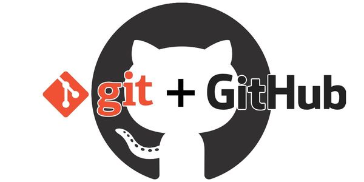

Anuncios
imagenes que me agradan a mi
imagenes de arañas
imagenes de una espada
Cursos de Git Desde cero
Cursos de Git
Acerca de Git

Git Es un Sistema de control de versiones distribuido gratuito y de código abierto diseñado para manejar todo, desde proyectos pequeños a muy grandes, con la velocidad y eficiencia. Git es fácil de aprender y ocupa poco espacio con un rendimiento ultrarrápido. Supera a las herramientas SCM como subversión. CVS, Perforce y ClearCase con características como múltiples locales, áreas de preparación convenientes y múltiples flujos de trabajo.
Lo que se puede hacer con Git
Git te permite y te anima a tener múltiples sucursales locales que pueden ser completamente independientes entre sí. La creación, fusión y eliminación de esas líneas de desarrollo lleva unos segundos. Esto significa que puede hacer cosas como:
Velocidad de Git
Git es rápido. Con Git, casi todas las operaciones se realizan localmente, lo que le da una gran ventaja de velocidad en sistemas centralizados que constantemente tienen que comunicarse con un servidor en algún lugar. Git fue creado para funcionar en el kernel de Linux, lo que significa que ha tenido que manejar de forma eficaz grandes repositorios desde el primer día. Git está escrito en C, lo que reduce la sobrecarga de los tiempos de ejecución asociados con lenguajes de nivel superior. La velocidad y el rendimiento han sido un objetivo de diseño principal de Git desde el principio.
Ensaño
Área de ensayo. A diferencia de los otros sistemas, Git tiene algo llamado "área de preparación" o "índice". Esta es un área intermedia donde las confirmaciones se pueden formatear y revisar antes de completar la confirmación. Una cosa que distingue a Git de otras herramientas es que es posible preparar rápidamente algunos de sus archivos y enviarlos sin confirmar todos los demás archivos modificados en su directorio de trabajo o tener que listarlos en la línea de comandos durante la confirmación. Por supuesto, Git también hace que sea fácil ignorar esta función si no desea ese tipo de control; simplemente agregue una '-a' a su comando de confirmación para agregar todos los cambios a todos los archivos en el área de prueba.
GitHub
GitHub es una forja para alojar proyectos utilizando el sistema de control de versiones Git. Se utiliza principalmente para la creación de código fuente de programas de ordenador. El software que opera GitHub fue escrito en Ruby on Rails.